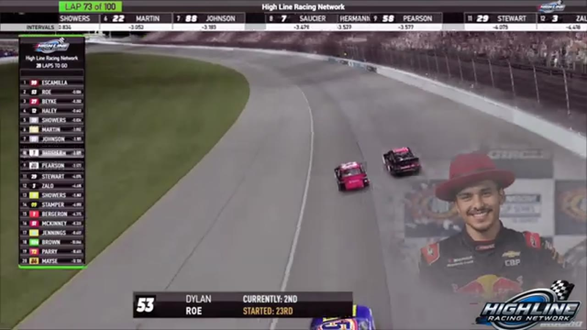

Dylan Row
Team assignment not stated in the structured owner record.
A REVIEWED STORY FILE
- Official files
- 2
- Central editions
- 1
- Exact tape cues
- 2
- Accepted podiums
- 0
Dylan Row appears in 2 official HLRN broadcast files across Season 1. The current result ledger does not assign this driver a supported top-three finish. A consistently stated team affiliation remains open for owner review. The currently indexed source window runs from January 12, 2026 through April 7, 2026.
Highline Central supplies 1 bounded race edition, while the primary chapter index supplies 2 direct jump points. No repeat track fingerprint is yet supported. The densest direct-tape categories are stage (1 cue) and battle (1 cue). Those counts describe where the name is easiest to find; they are not fault, pace, or performance grades. A source-attributed car frame is published with its original video and timestamp. That is the current discovery map for Dylan Row.
Official name signals are used for discovery only. They do not become starts, points, incident counts, or an ability grade. This page is deliberately detailed about the tape and restrained about the unavailable competition record. Separately, 1 Highline Live file sits on the bonus shelf and never enters the official season ledger. The displayed name is labeled transcript normalized; that status remains visible so an owner roster can strengthen or correct the identity without rewriting the evidence trail. Those boundaries define Dylan Row's public HLRN file.
2 featured race-tape cues
These are discovery routes into complete HLRN broadcasts, not performance grades or inferred results.
- S1 / R9 · STAGE
Stage 2 winner call at Chicagoland
S1 / R9 at 1:22:13: The broadcast enters a stage-scoring discussion at Chicagoland with Juan Escamilla and Dylan Row in the scoring call. The clip preserves the on-air timing or points call without promoting it into a complete stage result; the accepted feature result ledger remains separate.
Chicagoland - S1 / R9 · BATTLE
The Chicagoland lead pack goes four wide
S1 / R9 at 1:27:35: The Chicagoland pack compresses four wide while Juan Escamilla and Dylan Row are named on the call. The chapter keeps the live battle intact and makes no finishing-order claim.
Chicagoland
Recent editions connected to Dylan Row
Verified team history is not consistently stated. No position-specific top-three result is currently accepted. Name normalization remains reviewable against owner records.